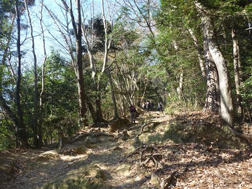
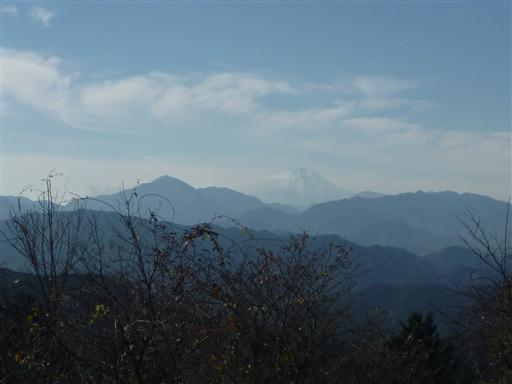
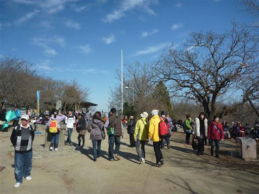
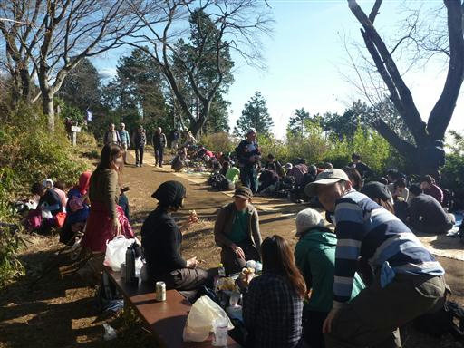
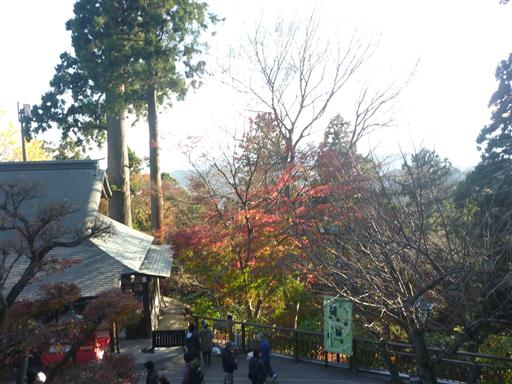
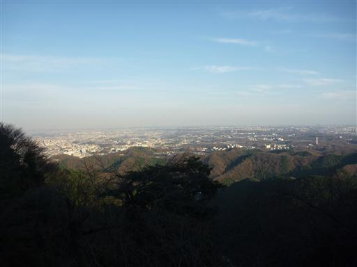
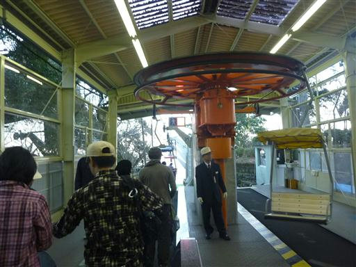
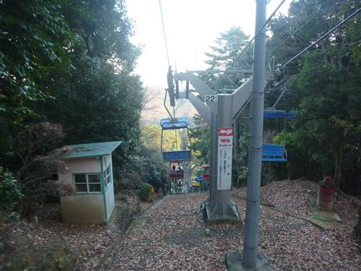

高尾山
| 日付 | 2010年12月11日（土） |
|---|---|
| 山域 | 高尾周辺 |
| メンバー | グループ（男24女16） |
| 山行形態 | 日帰り |
| アクセス | 電車、リフト |
| ルート (Map) | 高尾山口駅→稲荷山コース→高尾山→リフト山上駅 |
今年も忘年会はまたまた高尾山。
そしてルートは今年も稲荷山コースだ。
稲荷山コースを登っていく。
今回は人数が多いのでパーティは3つに分けられている。

今日は天気がよく、富士山がきれいに見えている。
晴天が多い12月だが、富士山が見えるのは3年ぶりだ。

高尾山山頂。相変わらず賑わっている。

山頂から少し下ったところにあるスペースで宴会を始める。

しばらく飲み食いしたところで撤収。薬王院経由で帰る。
まだ紅葉が見られる。

関東平野の展望が広がる。

今年はケーブルカーでなくリフトを使用。

下山。その後、飲み屋に移動する。
久しぶりの大人数登山だった。

他の山行記録